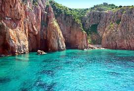

La Réserve Naturelle de Scandola est un véritable trésor de la Corse, situé sur la côte ouest de l'île. Classée au patrimoine mondial de l'UNESCO, cette réserve naturelle abrite une faune et une flore exceptionnelles, ainsi que des paysages de falaises et de grottes impressionnants. Vous pourrez y observer des oiseaux de mer, des phoques et même des dauphins. Les excursions en bateau sont une façon idéale de découvrir cette merveille de la nature.
